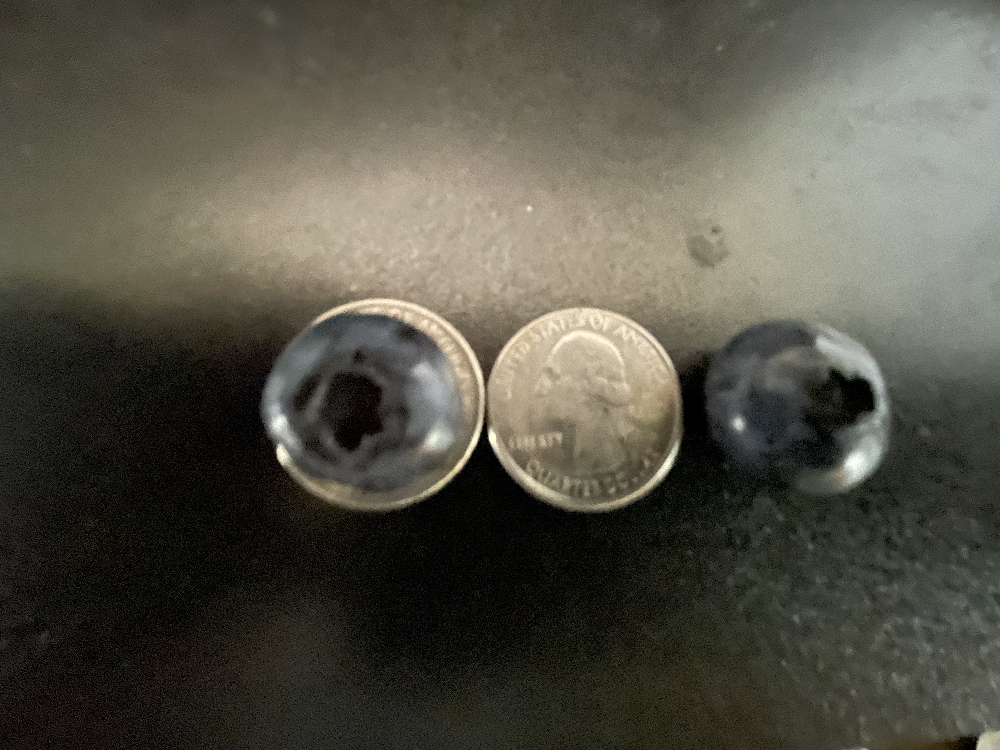
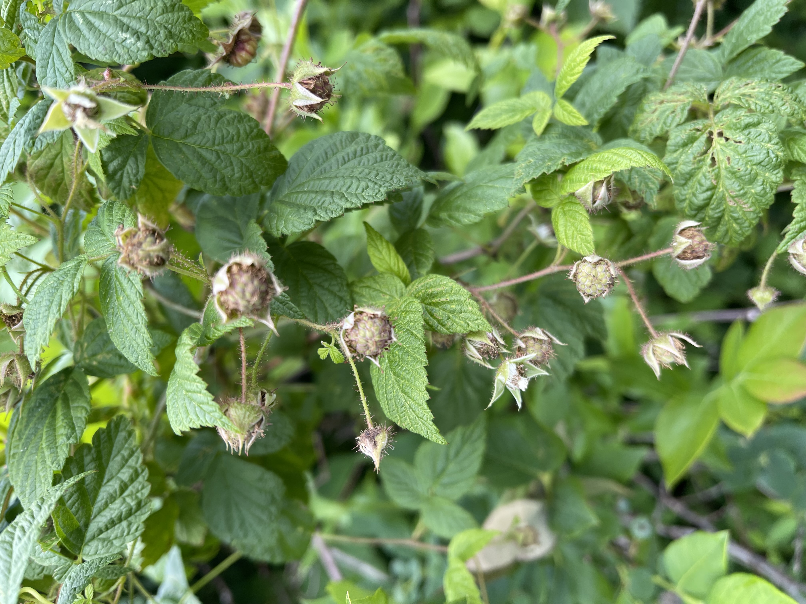
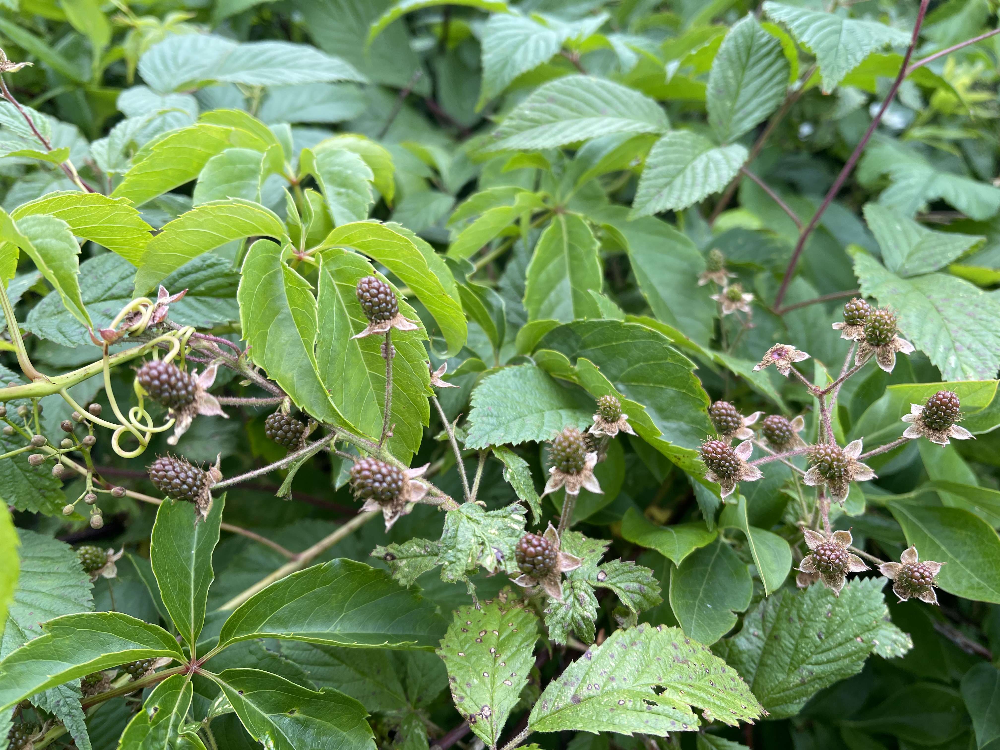
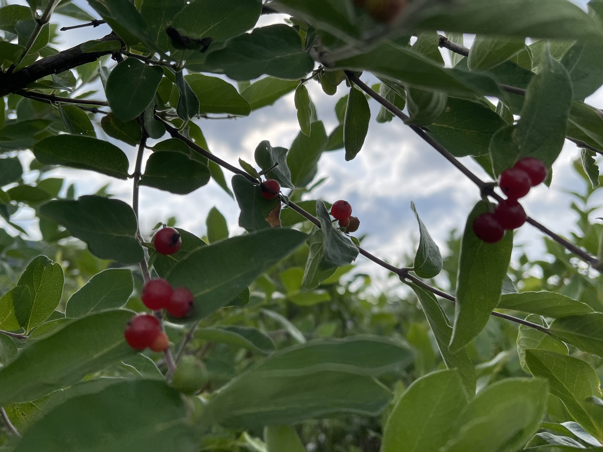

Field Locations
Where to Pick
Photos updated July 6, 2026.

Size


📸 Location photos updated weekly during peak season.
Updated during peak season. Check here before you make the drive so you know what to expect on the farm.
Plan your visit with Prattsburgh's 7-day and hourly weather forecasts.
National Weather Service
Prattsburgh, NY 14873 — 7-day forecast
National Weather Service
Prattsburgh, NY 14873 — Hourly forecast
Photos updated July 6, 2026.

Raspberries and Blackberries photos updated July 3, 2026.



Nestled in the heart of the Finger Lakes region of New York State, our blueberry farm sits within one of the most distinctive fruit-growing soils and microclimates in the Northeast. Prattsburgh and the hillsides surrounding Keuka Lake are defined by, Honeoye soil, dramatic elevation changes, and the moderating influence of the deep lakes that temper both winter cold and summer heat.
The blueberry field stretches just over 20 acres across sun-drenched hillside rows next to the forest with a natural spring fed 4-acre pond at the center. A few different blueberry varieties are grown providing different harvest peaks throughout the beginning of the season.

Our blueberries are shaped by something money can't replicate — the long, cool early summer ripening season unique to the Finger Lakes. While berries irrigated heavily right up through ripening can produce thin-skinned, watery fruit with diluted flavor, our first ripened berries develop slowly through the cooler earlier parts of summer, drawing on seasonal rains and natural soil moisture from lake-effect precipitation and the slow gradual warmth of a Finger Lakes summer.
A cool and rainy early summer season in the Finger Lakes allows our blueberries' green phase to develop more slowly. This slow maturation builds dense, full-bodied berry flesh. The result is a larger meatier berry with a vivid flavor profile for that blueberry variety.
Late season berries that have ripened during the drier and hotter portions of the season result in berries where the natural sugar is more concentrated providing a more pungent sweetness from a smaller berry.
Picking beginning season berries provides a firmer, heavier berry that holds its shape. Bite in and there's real berry substance, not the thin pop and flood of water you get from berries heavily watered during their ripe blue phase. Full-bodied flavor, every single berry.
Early pickers get the largest berries of the season. Early comers in the season enjoy the biggest, most flavorful berries. As summer deepens and the region dries out through the hotter portion of the summer, newer berries tend to ripen smaller and develop a sweeter, more concentrated intensity. Both stages are wonderful, but if you want to pick or buy pre-picked the largest, most full-bodied berries, plan your visit early in the season and stock up. Get all your fresh blueberry picking done early as supplies are limited— your freezer will thank you come January.
We're open every single day of the season. Find us just outside Keuka Lake. When you get here just grab a bucket with a bag in it and start picking!
Sunrise to Sunset
7 Days a Week
Till Season's End
Cash or Check Only